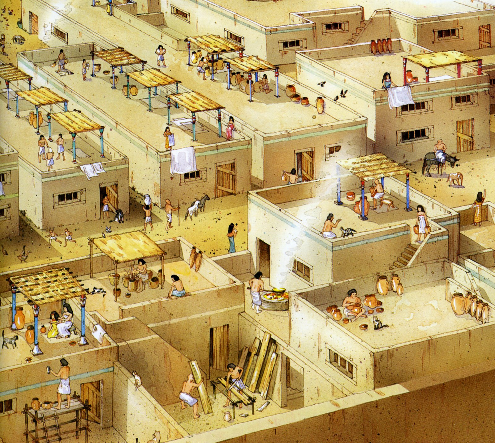

El comienzo de una nación
La geografía del Antiguo Egipto es muy significativa y va a influir muchísimo en su arte. Egipto está situado en el nordeste de África y está muy aislado de otros países por su situación geográfica. Sus límites son: por el oeste, el desierto de Libia; por el este, el desierto de Arabia; por el norte el mar Mediterráneo y por el sur el macizo de Etiopía y el desierto de Nubia.

Al Nilo le llaman río de los dioses ya que tiene un carácter sagrado y es honrado por los egipcios. El Nilo da vida al valle que se desarrolla a lo largo de él. Este valle va a tener una anchura muy pequeña, de 5 a 30 km, dependiendo de las zonas. Es un río muy irregular en cuanto al caudal debido a las lluvias monzónicas, por lo que crea inundaciones, que beneficiaban la fertilidad, por lo que la cosecha depende de las crecidas del Nilo, y de ella el trabajo y la vida. Desde finales de junio empieza a aumentar su caudal y va arrastrando en un principio malas hierbas y más tarde el limo, que se deposita en el suelo, momento que se aprovecha para sembrar. Esto sucede varias veces al año por lo que Egipto se convierte en un territorio muy rico y fértil.
Imperio antiguo
El Imperio antiguo representó la consolidación del modo de hacer la política, la cultura y la religión, ya iniciadas durante el periodo protodinástico. Las Dinastías III, IV y V (2686-2345 a.C.), marcan su apogeo, y las Dinastías VI VII y VIII (2345-2160 a.C.), su declive. Son reinados en los que se plasma la organización religiosa y artística con la aparición de una la monarquía centralizada cuyo rasgo más notable es la divinización absoluta. La monarquía que inicialmente encarnaba una forma particular del antiguo dios Horus, fue evolucionando a partir de la IV dinastía hacia características más solares vinculándose al dios Re. Como homenaje al rey divinizado, más cercano a los dioses que a los hombres, se inicia la construcción monumental de complejos donde se reunían en un solo recinto todas las estructuras y elementos funerarios de culto al rey muerto. Dichos complejos culminan con la construcción de las pirámides. Durante la dinastía V, el culto solar heliopolitano fue predominante, lo que se plasmó con la construcción de los templos solares. De esta época data la primera evidencia de este carácter divino de la monarquía con los Textos de las Pirámides que identifican al rey tras su muerte y renacimiento con Re. Hacia el final del imperio antiguo al dios fallecido se asimila con Osiris.
La falta de evidencias y la poca información que nos ha llegado del periodo correspondiente a la III Dinastía (2686–2613), impide hacer un análisis sucesorio claro. Existe un verdadero problema para situar al rey SANAJT / NEBKA. Se le cita en el Canon de Turín y la lista de reyes de Abidos como predecesor de Dyeser. Si aceptamos que se le atribuye un tiempo de reinado de 19 años, que podría ser un error, parece que habría que situarlo en virtud de los hallazgos arqueológicos, según Gardiner en algún periodo entre Dyeser y Seneferu. Podría tratarse también de un rival vencedor (hijo?) de Jasejemuy , que fuera luego vencido por Dyeser, o menos probable, que el mismo Dyeser fuera un usurpador y depusiera a Sanajt poniendo su sello en la tumba de Jasejemuy para hacer valer sus derechos sucesorios. Se ha postulado también que pudieron coexistir dos líneas dinásticas que arrancan desde la muerte de Nineter, la de Sanajt, desde Peribsen y la de Dyeser, desde Jasejemuy. A Sanajt que se le atribuyen con cierta probabilidad la Pirámide atribuida a Dyeser en Saqqara, Pirámide de El-Kula, y la Mastaba de Madium.
Las primeras viviendas que conocemos datan del Periodo Predinástico: construidas con paredes de adobes y el techo de troncos cubiertos por hojas de palmera y barro, eran casas sencillas, pequeñas, semisubterráneas y con el techo inclinado, muy parecidas a las actuales. Incluso la técnica permanece inalterada, con los bloques de barro y paja secándose al sol, material frágil en el tiempo, que no nos ha dejado restos arqueológicos, al contrario que las tumbas o los templos: los vivos no necesitaban construcciones eternas, sólo los dioses y los difuntos eran merecedores de ese privilegio. Sólo quedan restos de Amarna, Deir el-Medina y poco más.
Los agricultores regían su vida por las estaciones, que para ellos eran tres: Inundación, Siembra y Cosecha, pero de forma especial por las crecidas del río. Después de que los terrenos inundados afloraran, era necesario volver a medir y señalar las lindes, tarea que realizaban los escribas. Tras esto, el cabeza de familia trabajaba la tierra, llevando un arado de madera del que tiraba una pareja de bueyes dirigidos por un niño, y detrás el resto de la familia sembraba el grano, proporcionado por los almacenes del Estado.